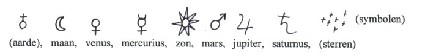
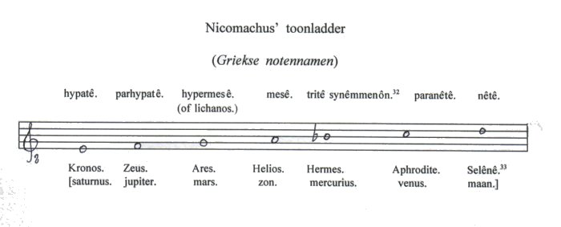
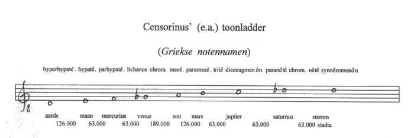
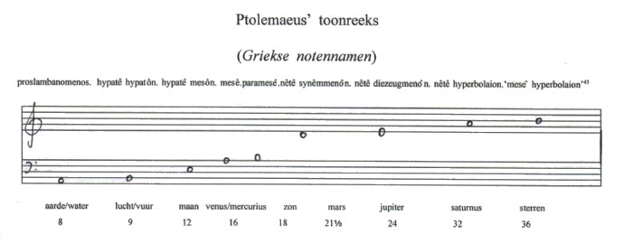
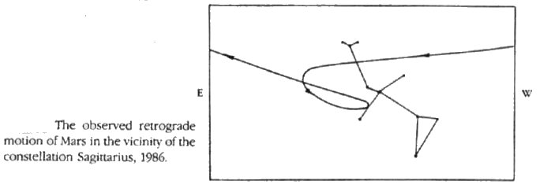
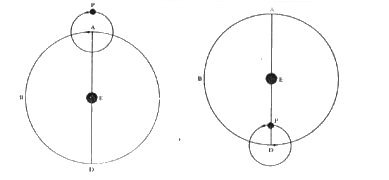
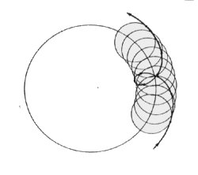

Inhoudsopgave
Plato's ‘Muziek der
Sferen' Inhoudsopgave
Plato's ‘Muziek der
Sferen'  Cicero
Cicero
Griekse Muzikale Astronomie
Allereerst wil ik vier kosmologieën(1) beschrijven die achtereenvolgens aan
Pythagoras, Ptolemaeus, Philolaos, en (hoewel al behandeld) Plato,
toegeschreven worden, om vervolgens de twee systemen van pythagoreïsche
planeten-harmonie te behandelen, die op de eerste (Pythagoras) en de tweede
kosmologie (Ptolemaeus) gebaseerd werden.
Op de derde kosmologie is geen
toonladder gebaseerd, de vierde kosmologie (die van Plato), is al
behandeld.
Tot besluit van dit gedeelte zal ik een derde systeem van
pythagoreïsche planeten-harmonie behandelen: de toonreeks van
Ptolemaeus’ ‘Kanobos-stêle’, die echter niet met de
astronomie, maar veeleer met de astrologie verbonden is.
I
Ten eerste, door Pythagoras zelf zou ontdekt zijn dat de
aarde een stilstaande bol is die in het middelpunt van de kosmos staat,
waaromheen de hemellichamen gelijkmatig en cirkelvormig bewegen. De
gelijkmatigheid en de cirkelvormigheid van de planetenbanen werd a
priori vastgesteld, vanwege de aanname dat dergelijke ‘goddelijke
lichamen’ niet anders dan volkomen bewegingen zouden volvoeren. De meest
volkomen vorm voor de Grieken was de bol, de meest volkomen beweging de
cirkel.(2)
Deze doctrine van gelijkmatige en cirkelvormige planetenbanen zou op gezag van
Aristoteles, en later Ptolemaeus (100-178 n.Chr.), bijna tweeduizend jaar (tot
1609, het jaar waarin Johannes Kepler Astronomia nova publiceert(3)) de astronomie beheersen. Deze
doctrine bracht grote moeilijkheden teweeg inzake de juiste verklaring (het
‘redden der verschijnselen’ - σώζειν τὰ φαινόμενα) want de planeten
bewegen niet gelijkmatig.
Berucht is bijvoorbeeld de retrograde beweging van mars, die vooruit maar ook
achteruit lijkt te bewegen. Om dit te verklaren had Ptolemaeus de zgn.
epicyclus nodig; voor te stellen als een kleine cirkel die roteert op
een grotere cirkel. De planeet is ‘bevestigd’ in de omtrek van de
kleine cirkel. Wanneer nu beide cirkels roteren is de retrograde beweging
verklaarbaar (zie afbeelding 2 en 3). Kepler
vereenvoudigde het oude, mathematisch complexe, systeem door elliptische banen
voor te stellen.(4)
Uitgaande van volkomen beweging en volkomen lichamen werd
het universum als een aantal ingesloten bollen (sferen) voorgesteld, de
bolvormige aarde in het midden, elk volgend hemellichaam bevestigd in de wand
van een grotere bol.(5) In de
buitenste bol waren de sterren bevestigd (deze sferen kunnen als werkelijke
lichamen worden opgevat, of slechts als loci voor de planetenbanen). De
planeten bewogen in volmaakte cirkels rond de aarde, de volgorde van de
planeten in deze eerste, en oudste(6),
kosmologie was als volgt:

De planeet die het langzaamst om de aarde beweegt is
saturnus (bijna dertig jaar voor een omwenteling), de snelste de maan (ongeveer
één maand).
In de tweede kosmologie werden venus en mercurius
verwisseld, omdat uit verdere waarneming bleek dat mercurius sneller beweegt
dan venus. De volgorde die zo ontstaat (maan, mercurius, venus, zon, mars,
jupiter en saturnus) was de gebruikelijke tot Copernicus (die immers de zon
centraal stelde) en werd met name gecanoniseerd door Ptolemaeus - zie de titelpagina, het systema Ptolemaicum.
Het derde model van de kosmos werd door Philolaos van Croton
(eerste helft 5de eeuw v.c.) ontworpen. Belangrijkste punt hierin was dat niet
de aarde, maar het zogenaamde ‘centrale vuur’ het middelpunt van de
kosmos was. Daaromheen draaiden aarde en ‘tegenaarde’ (een voor ons
onzichtbaar hemellichaam want aan de ‘overzijde’ van het centrale
vuur mee-draaiend), de zeven hemellichamen en de sterrenhemel. De som van deze
is 10 en Philolaos' model is hiermee niets anders dan de kosmologische pendant
van de tetraktus.(7)
Het tiental kan echter niet in verband met de zeventonige toonladder gebracht
worden, zodat Schavernoch spreekt over Philolaos' model als ‘mehr ein
mythisches Bild als eine astronomische Theorie ...’(8) Op deze kosmologie is dan ook niet een bepaalde
toonladder gebaseerd.
Een vierde en laatste(9) systeem treft
men aan in Plato's Timaeus waar de volgorde luidt: maan, zon, venus,
mercurius, mars, jupiter en saturnus (zie voorgaand
deel).
Op de volgende wijze werd de gedachte dat de bewegende
hemellichamen verwant zijn met de muzikale tonen verder uitgewerkt: de
planetenbanen werden als een lyra-snaar gedacht die tot een cirkel was gebogen,
zodat de planeet met de grootste baan die het langzaamst beweegt, saturnus, de
langste ‘snaar’ bezit en dus de laagste toon.
Precies dit treft men aan in de (neo-pythagoreïsche) weergave van de
Harmonie der Sferen van Nicomachus van Gerasa (2de eeuw n.Chr.) die de oudste
planetenvolgorde koppelt aan een oud toonsysteem. Zijn systeem ziet er als
volgt uit: (10)

Deze toonladder is opgebouwd uit twee conjuncte
tetrachorden(12) van het diatonische
toongeslacht (toonsafstanden 1/2-1-1): e-f-g-a en a-bes-c-d, het oudste
heptachord volgens Nicomachus.(13)
De langste snaar in dit eerste systeem van pythagoreïsche
planeten-harmonie representeert de langste planeetbaan (saturnus) en brengt het
laagste geluid voort, als het ware alsof de cirkelvormige planeetbaan
doorgeknipt is en op bijvoorbeeld een lier gespannen. De overige tonen worden
op dezelfde wijze afgeleid; deze eerste (en oudste) planeet-toonladder gaat
daarmee uit van de reële beweging van de planeten: zij is geordend naar
hoe lang een planeet over zijn omwenteling doet (van bijna 30 jaar, saturnus,
tot bijna een maand, de maan).
II
Het tweede pythagoreïsche systeem staat hier lijnrecht
tegenover, zowel in hoog-laag volgorde van de tonen, als de astronomische
waarneming waarop zij is gebaseerd. Deze toonladder is namelijk gebaseerd op de
(schijnbare) dagelijkse beweging van de hemellichamen om de aarde. Men ging
hierbij uit van de gedachte dat de hemellichamen die verder van de aarde
afstaan een grotere baan hebben en dus een hogere snelheid moeten hebben om in
24 uur rond te kunnen gaan.
Er spelen namelijk twee rotaties mee: de eigen beweging van de planeten om de
zon en de beweging van de aarde om zijn as. Wanneer nu voor beide bewegingen de
aarde als stilstaand centraal punt wordt genomen, houden de planeten hun
reële eigen beweging (of nu zon of aarde als uitgangspunt wordt genomen is
niet zo belangrijk: planeten zullen in periode x naar hun uitgangspunt
bewegen), maar zij hebben ook een schijnbare dagelijkse beweging, daar
niet de hemellichamen, maar de aarde roteert. In 24 uur lijken de hemellichamen
(nu met de sterrenhemel) dus rond de aarde te bewegen, een lichaam in een
grotere baan moet dus wel sneller bewegen. Een grotere snelheid impliceert
echter ook een hogere toon! Dit had als gevolg dat de maan (kleinste baan) nu
de laagste toon en saturnus een hogere krijgt.(14)
Toevoegingen aan dit systeem zijn de aarde en de sterrenhemel, zodat er een
negentonige toonladder ontstaat. Maar behalve de schijnbare dagelijkse
snelheden, werden ook de afstanden tussen de hemellichamen in deze toonladder
betrokken. En hoewel bijvoorbeeld Aristarchus van Samos (310-230 v.c.) of
Eratosthenes van Cyrene (276-195 v.c.) de juiste grootte van de aarde, maar ook
de afstand van de aarde naar de maan opvallend precies berekenden met de
beperkte wiskunde die hun ten dienste stond(15), toch waren de Grieken niet in staat de juiste
afstanden tussen alle hemellichamen te berekenen.
De afstand van 126.000 stadia (een στάδιον, de Griekse afstandmaat, is
ongeveer 185 meter) tussen aarde en maan die Censorinus(16) (eerste helft 3de eeuw n.c.) noemt en waarvan hij de
ontdekking aan Pythagoras toeschrijft is zuiver speculatief.(17) Een hele toon (tussen aarde en
maan) werd geacht 126.000 stadia te zijn, een halve toon de helft, dus 63.000
stadia. De toonladder waarin deze gegevens zijn ondergebracht ziet er als volgt
uit:

De toonladder is afgeleid uit het chromatische toongeslacht
(toonsafstanden 1/2-1/2-11/2). Er zijn twee tetrachorden: e-f-ges-a en
b-c’-des’-d’: het middengedeelte uit het ‘Volledige
systeem’; met daaraan toegevoegd de onderste toon d. De hoogste toon
(d’) is niet conform de juiste toonsafstand (11/2), dit had een e’
moeten zijn.(18)
Deze toonladder, het tweede systeem van pythagoreïsche planeten-harmonie,
wordt door bijvoorbeeld Censorinus en Theon van Smyrna gegeven. Een hierop
gelijkende toonladder, maar verschillend in de afstand saturnus-sterren (niet
1/2 maar 11/2 toonsafstand), wordt door Gaius Plinius Secundus Maior (‘de
oudere’, 23-79 n.c.) gegeven. Martianus Capella(19) (eind 4de eeuw n.c.) geeft dezelfde toonladder als
Plinius de oudere, met één verschil: de afstand zon-mars is bij
hem niet 1, maar 1/2 toon.(20)
In de verandering van een zeventonige naar een negentonige toonladder, die
gebruikt werd om de planeten-harmonie weer te geven, kan de ontwikkeling van de
Griekse muziek worden afgelezen, zodat Théodore Reinach naar mijn mening
volkomen terecht kan schrijven: ‘Un peu d’attention suffit à
montrer que les différents types (toonladders) proposés pour la
mélodie des sphères ne sont, en quelque sorte, que la projection,
dans l’espace infini, des gammes qui furent, à un moment
donné le plus en faveur sur notre petite terre, ou plutôt dans le
petit monde grec.’(21)
Want precies dit valt ook in de verdere ontwikkelingen van het idee van de
Harmonie der Sferen waar te nemen: Robert Fludd breidt zijn toonladder uit met
de Gamma ut (Γ), de toon G die Guido van Arezzo in Micrologus (1027) als
laagste toon aan het toonsysteem toevoegt; Johannes Kepler zal meerstemmige
akkoorden, of de verschillende modi, in de planetenbewegingen waarnemen; en
Athanasius Kircher zelfs een IV-V-I cadens (hoewel deze meer een aardig
voorbeeld is dan gebaseerd op reële astronomische waarnemingen, zoals wel
het geval is bij Kepler).
III
Het derde pythagoreïsche systeem van planeten-harmonie
lijkt qua omvang op Plato’s systeem, maar is, in tegenstelling tot
Plato’s, wèl betrokken op een Grieks toonsysteem, namelijk op de
vaste tonen uit het ‘Volledige systeem’ (Systêma
teleion).
De vaste tonen werden in het Griekse toonsysteem gebruikt als het raamwerk
waarop een bepaalde toonladder, bestaande uit een aantal tetrachorden van een
van de drie toongeslachten (diatonisch, chromatisch of enharmonisch - zie ook
noot xx), werd gebouwd. Er is hier dus geen sprake van een toonladder,
maar veeleer van een toonreeks.
Dit derde systeem is afkomstig uit het werk van Ptolemaeus(22) en het zag er als volgt uit: (23)

De getallen, en daarmee de afstanden tussen de tonen, doen
denken aan Ptolemaeus’ Harmonika, daarin deelt Ptolemaeus de
cirkel van de dierenriem (360o) volgens de
proporties waaraan de intervallen van de toonladder ontspringen. Dus door de
helft (180o) geeft het octaaf (2:1); hiermee
komen de getallen 36 en 18 overeen, echter een factor 10 kleiner. De overige
intervallen worden evenzo afgeleid. Een bijzonderheid is de verdeling van de
plaats die de aarde inneemt, deze is verdeeld in de vier elementen
(aarde/water/lucht/vuur). Van de aarde als geheel beloopt deze toonreeks twee
octaven: (8)-9-18-36, (A)-B-b-b'.(24)
Deze verdeling heeft, zoals Hans Schavernoch opmerkt(25), niets met astronomische waarneming
te doen: met reële noch schijnbare snelheden van de planetenbanen, noch
met de afstanden tussen de planeten of de lengte van hun banen, of zelfs de
(schijnbare) hoeksnelheden. Bovenstaande verdeling heeft veeleer met de
astrologie te maken: de oppositie (180o),
wanneer de planeten of aspecten van de dierenriem, bijv. Ram tegenover
Weegschaal etc. tegenover elkaar staan (een verschijnsel dat bijzondere
krachten zou hebben), met het octaaf; de trigoon (120o) met de kwint, en de kwadratuur (90o) met de kwart.(26)
Afbeeldingen (terug)

afb. 2 ‘Retrograde beweging van de planeet mars' uit: David
C. Lindberg, The Beginnings of Western Science. p. 91

afb. 2b ‘Retrograde beweging verklaard door epicycli'
ibid. p. 101
1. Wat betreft deze
kosmologieën, zie ook genoemde literatuur in de inleiding, noot 2. (terug naar
tekst)
2. Zie Hans Schavernoch, Sphären. p. 47 e.v.
(terug naar tekst)
3. Zie bijvoorbeeld E.J. Dijksterhuis, De Mechanisering
van het Wereldbeeld. p. 338 e.v., Alexandre Koyré The
Astronomical Revolution. p. 241-264 e.a. Maar zie ook genoemde andere
literatuur (inleiding, noot 2). (terug naar
tekst)
4. Ibid. (terug naar
tekst)
5. Zo geeft bijvoorbeeld Plato de bouw van de kosmos weer
in de Staat (617 B-C). Maar zie ook David C. Lindberg, The Beginnings
of Western Science. p. 41-45 en 89-105; of andere literatuur noot
3/inleiding, noot 2. (terug naar tekst)
6. Carl von Jan (‘Die Harmonie der
Sphären’ loc. cit. p. 18-19) beschouwt de platonische
volgorde van de hemellichamen als de oudste. Hans Schavernoch,
(Sphären. p. 52 - noot 139) wijst echter op moderner onderzoek dat
heeft uitgewezen dat de platonische, hoewel oud, niet de oudste
planetenvolgorde is. Hierom volg ik Schavernoch. (terug
naar tekst)
7. Zie Hans Schavernoch, Sphären. p. 53; Emile
de Strycker, Beknopte geschiedenis. p. 29-30; of Edward A. Lippman,
Musical Thougt. p. 14-15 (terug naar
tekst)
8. Hans Schavernoch, Sphären. p. 53 (terug naar tekst)
9. Niet onvermeld mogen hiernaast blijven het systeem van
Hiketas (5de eeuw v.Chr.) en Ekphantos van Syracuse (4de eeuw v.Chr.) die
beiden stelden dat de aarde in het middelpunt van de kosmos om haar eigen as
roteerde; en het heliocentrische systeem van Aristarchos van Samos (310-230
v.Chr.), die 1800 jaar vóór Copernicus de zon in het middelpunt
van de kosmos stelde. Zie Hans Schavernoch, Sphären. p. 49; voor
meer informatie zie de literatuur vermeld in noot 2. (terug
naar tekst)
10. Nicomachus van Gerasa, Harmonikon encheiridion.
caput 3. ed. Carl von Jan, Musici Scriptores Graeci. p. 241-242. maar
zie ook L.P. Grijp en P. Scheepers (red.), Van Aristoxenos tot
Stockhausen. I. p. 41-52 (terug naar tekst)
11. De Griekse namen die Nicomachus geeft, zie
Harmonikon encheiridion. caput 3. ed. Von Jan p. 242 (het zijn overigens
dezelfde goden: Saturnus=Kronos, etc.). (terug naar
tekst)
12 Het Griekse toonsysteem kent 3 toongeslachten, die
ontstaan door de toonsafstanden binnen twee ‘vaste’ tonen te
variëren: het diatonische tetrachord (toonsafstanden 1/2 1 1: e-f-g-a),
het chromatische tetrachord (1/2 1/2 11/2: e-f-ges-a) en het enharmonische
tetrachord (1/4 1/4 2: e-e+-f-a, + betekent kwarttoon). Meerdere tetrachorden
kunnen aaneengesloten worden, waardoor een toonladder ontstaat. Hierbij zijn er
twee mogelijkheden: een toonladder van twee octaven A-a-a’, het zgn
‘Volledige systeem’ (Systêma teleion); met tussen de
mesê en de eerst volgende toon (de paramesê) een hele
toonsafstand, dus a - b. Ten tweede een toonladder van een octaaf en een kwart
A-a-d’, het zgn. ‘Gebonden systeem’ (Systêma
synêmmenôn); met tussen de mesê en de eerst volgende toon
(de tritê synmmênôn) een halve toonsafstand, dus a -
bes. De middelste twee tetrachorden zijn dan gebonden (conjunct), bijv.
e-f-g-a/a-bes-c’-d’. De toonladder die Nicomachus geeft is gezien
de bes dus een gedeelte uit het ‘Gebonden systeem’. Zie hierover
verder bijv. L.P. Grijp en P. Scheepers (red.), Van Aristoxenos tot
Stockhausen. I. p. 413 e.v. (terug naar
tekst)
13. Zie L.P. Grijp en P. Scheepers (red.), Van
Aristoxenos tot Stockhausen. I. p. 47 Maar zie ook Théodore Reinach,
‘La musique des sphères’ loc.cit. p. 435. Zijn
weergave van Nicomachus’ Sferen-harmonie bevat echter een fout: hij
draait de planeten venus en mercurius om. Hieraan wijdt Roger Bragard een kort
essay (‘L’harmonie des sphères selon Boèce’
loc. cit.), waarin hij Reinach corrigeert op grond van Nicomachus’
tekst. Bragard stelt daarnaast een emendatie voor op grond van het feit dat in
Nicomachus’ tekst sprake is van een octaaf (diapason): Bragard
komt zo tot het voorstel e’-d’-b-a-g-f-e. Hierin heeft de b een
plaats. In Van Aristoxenos tot Stockhausen (I. p. 52) wordt eveneens
stilgestaan bij de betekenis van het woord diapason: ‘Gewoonlijk
wordt met deze uitdrukking (diapason) het octaaf aangeduid, hoewel zij
letterlijk alleen ‘door alle (tonen)’ betekent. En zo moet het hier
ook worden geïnterpreteerd: Â alle tonen van het heptachord, ook al vormen
zij hier toevallig een septime.’ Vanwege deze aanname ga ook ik uit van
een septime. (terug naar tekst)
14. Zie hierover ook Carl von Jan, ‘Die Harmonie der
Sphären’ loc. cit. p. 21 e.v. en Hans Schavernoch,
Sphären. p. 56 e.v. (terug naar
tekst)
15. Zie Albert van Helden, Measuring the Universe.
Cosmic Dimensions from Aristarchus to Halley. Chicago/London, The
University of Chicago Press, 1985. p. 4 e.v. (terug naar
tekst)
16. Censorinus, De die natali. caput 13 (de
verschijningsdatum van dit werk was 238 n.c.). ed. Otto Jahn, Censorini. De
Die Natali Liber. Berlin, 1845. Herdruk: Amsterdam, Editions Rodopi, 1964.
p. 31-33 (terug naar tekst)
17. Zie Hans Schavernoch, Sphären. p. 57 e.v.
(terug naar tekst)
18. Théodore Reinach geeft een interessante
verklaring voor de twee verschillende toonladders (d’ als hoogste of
e’ als hoogste), hij vergelijkt ze namelijk met de enharmonische
toonladders van de ‘alleroudsten’ die Aristides Quintillianus (eind
3de, begin 4de eeuw n.c.) in zijn werk Peri mousikês geeft. Deze
toonladders worden bijv. in Plato’s Staat (Boek III, hoofdstuk 10
e.v./399A e.v.) genoemd. Kenmerk van deze toonladders was dat de tetrachorden
waaruit zij opgebouwd werden twee kwarttonen bevatten (de volgorde was: 1/4 1/4
2 toonsafstanden). De toonladders die Censorinus en Theon geven
(d-e-f-ges-a-b-c’-des’-d’) zijn volgens Reinach afgeleid van
‘le mode phrygien enharmonique’, met de tonen d-e-e+-f-a-b-b+-c-d
(+ wil zeggen een kwarttoon). De toonladders van Plinius en Martianus (Reinach
verhoogt de 1/2 toonsafstand tussen zon en mars bij Martianus tot 1 hele), te
weten d-e-f-ges-a-b-c’-des’-e’ zou dan volgens Reinach
overeenkomen met ‘l’enneachorde dorien enharmonique’:
d-e-e+-f-a-b-b+-c’-e’. De verwarring is ontstaan doordat de
enharmonische toongeslachten op een gegeven moment in onbruik raakten, dit
betekende ook dat de kennis ervan verdween en zo las en noteerde men in later
tijden het chromatisch in plaats van het enharmonisch toongeslacht; met als
gevolg dat de e+ een f werd, de f een ges - enzovoorts. Zie Théodore
Reinach, ‘La musique des sphères’ loc.cit. p.
437-445. Maar ook L.P. Grijp en P. Scheepers (red.), Van Aristoxenos tot
Stockhausen. I. p. 85. Overigens, hier wordt op de g begonnen en niet op de
d zoals Reinach, maar dit is weinig belangrijk. Zie echter ook Erich Franck,
Plato. p. 6 e.v. over de ontwikkelingen naar enharmonisch, chromatisch
en diatonisch systeem en de beleving van deze door de Grieken. (terug naar tekst)
19. Een ander, vermeldenswaardig punt inzake de weergave
van de Sferen-harmonie door Martianus Capella is dat hij de negen sferen
gelijkstelt met de negen muzen: sterren-Urania, saturnus-Polyhymnia,
jupiter-Euterpe, mars-Erato, zon-Melpomene, venus-Terpsichore,
mercurius-Calliope, maan-Clio en de aarde tenslotte met Thalia. Zie Hans
Schavernoch, Sphären. p. 87; maar zie ook de literatuur over de
muzen en de Sferen-harmonie vermeld in noot xx. (terug naar
tekst)
20. Censorinus, De die natali. c. 13; Theon van
Smyrna, Tôn kata aritmêtikên chresimôn eis tên
tou Platônos anagnôsin. II, 15; Martianus Capella, De
nuptiis philologiae et mercuriis. II, 169 e.v.; Gaius Plinius Secundus,
Historia naturalis. II, 20 e.v. Zie hierover verder Carl von Jan,
‘Die Harmonie der Spären’ loc. cit. p. 21 e.v.;
Théodore Reinach, ‘La musique des sphères’ loc.
cit. p. 437-445; en Hans Schavernoch, Sphären. p. 58 e.v. (over
Martianus Capella p. 85 e.v.). Vertalingen van de betreffende fragmenten van
Censorinus, Plinius, en Theon (maar daarnaast ook Nicomachus van Gerasa), zijn
ook te vinden in Joscelyn Godwin, The Harmonies of the Spheres. A Sourcebook
of the Pythagorean Tradition in Music. Rochester (Vermont), Inner
Traditions International, 1993. (terug naar
tekst)
21. Théodore Reinach, ‘La musique des
sphères’ loc. cit. p. 434 (terug naar
tekst)
22. De toonreeks is een afschrift van de zgn.
‘Kanobos-stêle’, een zuil in opdracht van Ptolemaeus in 148
n.c. bij Alexandrië aan de westelijke Nijlmonding opgericht, waarop een
aantal resultaten van Ptolemaeus’ astronomische onderzoekingen waren
gegraveerd. De zuil is verloren gegaan, de inscriptie is bewaard gebleven. Zie
Hans Schavernoch, Sphären. p. 82-84; of Carl von Jan, ‘Die
Harmonie der Sphären’ loc. cit. p. 26-37. De betekenis van de
tekst in combinatie met de getallen is echter omstreden, zo is er een aantal
oplossingen denkbaar wat betreft de volgorde van de hemellichamen. Ik heb die
van Schavernoch overgenomen, waarin de aarde (aarde/water-lucht/vuur) twee
plaatsen krijgt en mercurius/venus één. Denkbaar is ook, zoals
Von Jan doet (op. cit. p. 30), de aarde één plaats en
mercurius/venus twee. Zie hierover ook Bruce Stephenson, The Music of the
Heavens. Princeton, Princeton U.P., 1994.; en wat betreft het werk van
Ptolemaeus: J.L. Heiberg (ed.), Claudii Ptolemaei opera quae exstant
omnia. Leipzig, Teubner, 1907. (‘Kanobos-toonreeks’: II, p.
149-155). (terug naar tekst)
23. De ‘mesê hyperbolaion’ is geen toon
in het Griekse toonsysteem, de a’ is de hoogste. (terug naar tekst)
24. Zie Hans Schavernoch, Sphären. p. 83 (terug naar tekst)
25. Ibid. (terug naar
tekst)
26. Ibid. Over de verdere verbindingen tussen de
dierenriem (astrologie) en muziek in Ptolemaeus’ Harmonika, zie
L.P. Grijp en P. Scheepers, Van Aristoxenos tot Stockhausen. I. p.
75-78
|